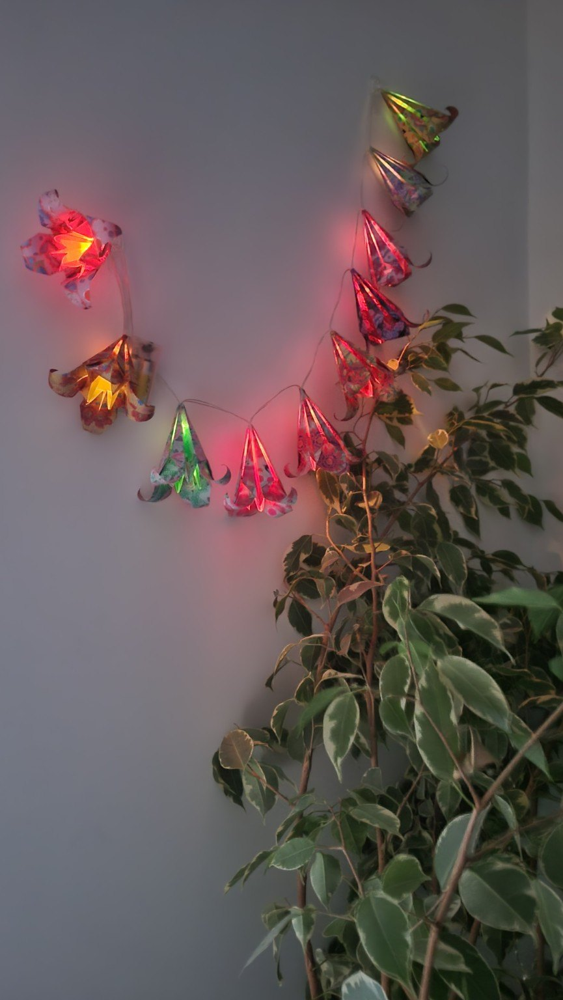
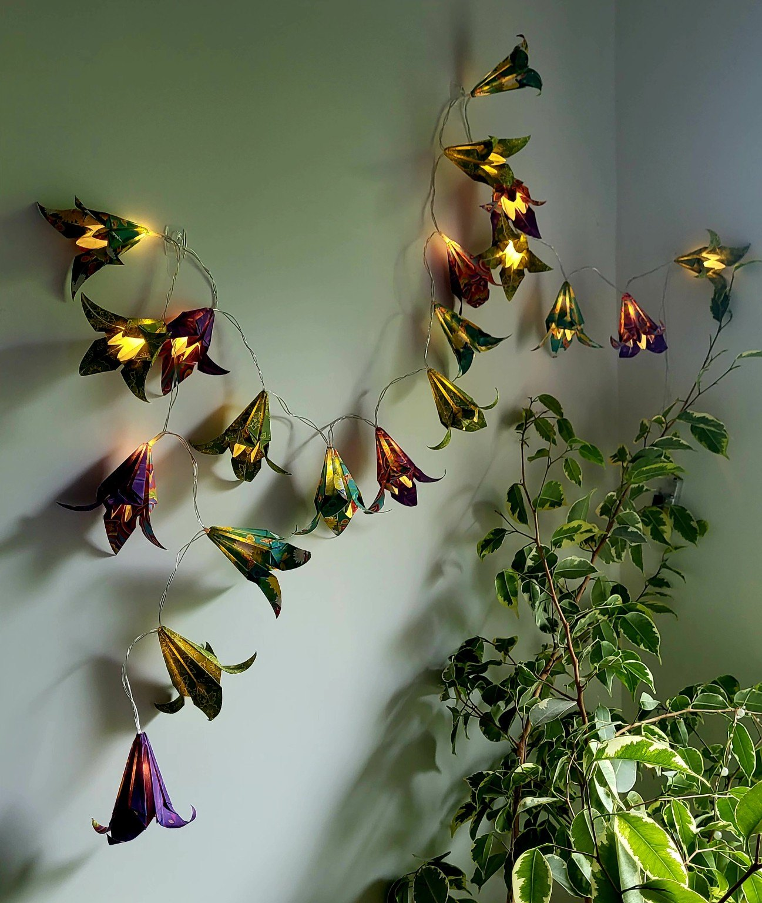
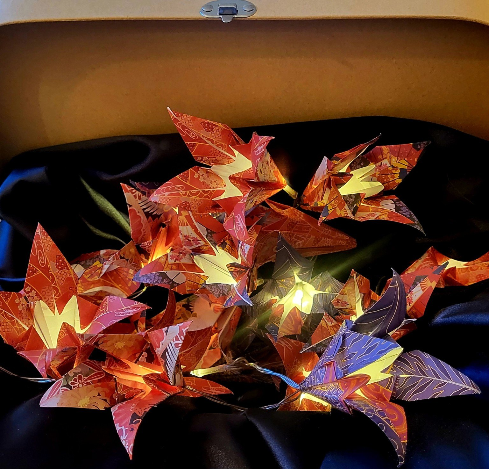
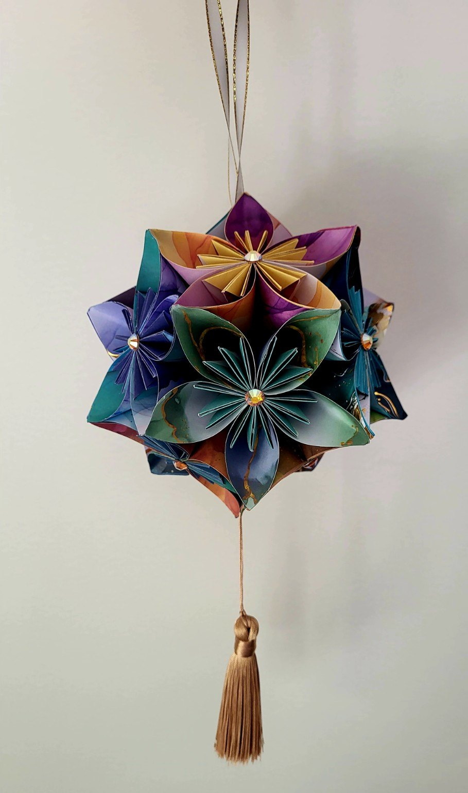

Jardin tropical
Des couleurs franches qui s’éveillent à la lumière.
Des plis précis, des motifs choisis un à un et des créations façonnées lentement. Éteintes, elles révèlent le papier. Allumées, elles changent l’atmosphère.

Les papiers disponibles, leurs motifs et leur manière de laisser passer la lumière rendent chaque création singulière. Certaines sont uniques, d’autres réalisées en très petites séries.
Fleur après fleur, chaque élément est plié puis installé à la main autour de la lumière.
Des couleurs franches qui s’éveillent à la lumière.

Une ligne florale, aérienne et généreuse.

Une présence chaude, entre ombre et papier.

Un bouquet lumineux aux reflets profonds.
Des sphères florales composées pétale après pétale, finies de détails précieux et d’un pompon de soie.

Une composition douce, ponctuée d’éclats dorés.

Bleus profonds, verts minéraux et touches de lumière.

Un assemblage vif de papiers floraux contrastés.
La collection est en cours de photographie. Elle rejoindra très bientôt les guirlandes et les kusudamas.
Découvrir la boutique Etsy